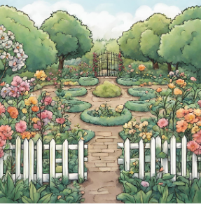

All of that time consuming, reluctant yard work? Leave it to us. We do anything from heavy work like pressure washing and building sheds for you, to gentle work like picking out weeds and cleaning up your garden. Leave it to the locals who care about what their community's precious yards look like.
My company provides top tier yard work services to local families' yards around the area of la peche. Over the past few years, if you've seen a yard completely transform quickly and quietly, it could have been us! Our goal is to provide our to as many people as possible to maintain the natural, clean, fresh feel of the area.
